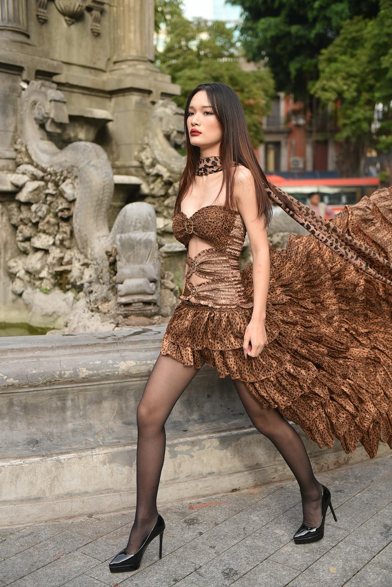
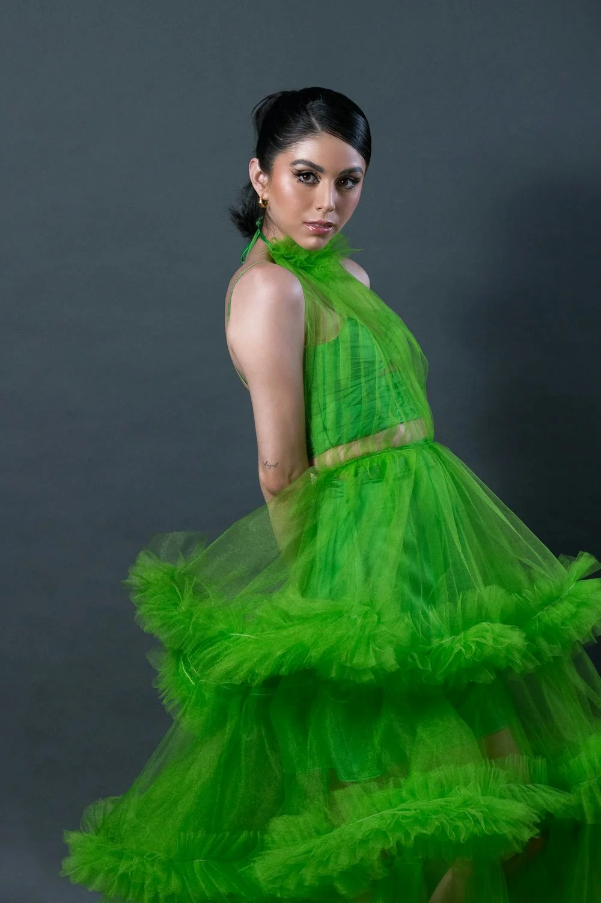
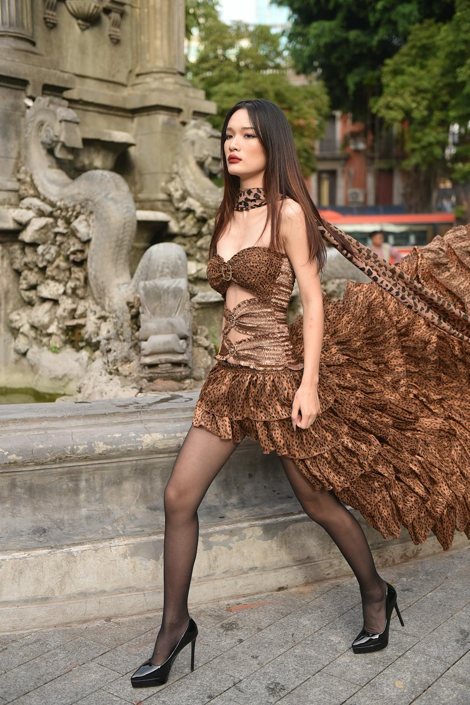
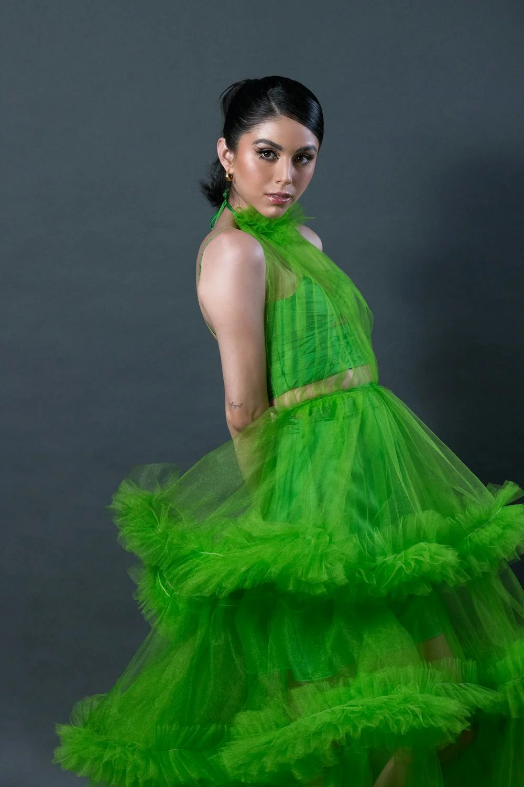

TOP 5 ICONIC FASHION TRENDS (SOOOO FETCH)
These are the top five iconic fashion trends in my opinion. They
are very iconic and still remain relevant till today.
While some of
these have been alive for a while, some of them are just getting
started. Fashion trends are a way of styling or dressing fashionable or
popular items.
Often more popular during a timeframe, they are usually a combination of
key items and colors to create a style of dressing.
1. Y2K
")
Y2K is one of the best fashion trends ever created in my opinion.
That is very evident till today as people still find ways to style
themselves like this. Y2K is a look that spans from the late 90's to
early 2000s, but is still popular till today.
It was typically a combination of low-rise jeans, scarf tops, boot cut
jeans, velour tracksuits, pedal pushers (capris), pastels, and
metallics.
The accessories were typically: bucket hats, trucker caps, bowling bags,
mini bags, low waist belts, sandals, and butterfly clips.
2. 90's pop/ 90's in general


90's fashion still plays a major role in fashion today. It is
still constantly referenced and is one of the building blocks of
fashion in pop culture.
It brought on the look of baggy clothing, denim on denim, and streetwear
looks.
The outfits often consisted of baggy jeans, baggy overalls, cargo pants,
jean jackets, tracksuits, mom jeans (very high-rise), plaid clothing,
flannel shirts, jerseys, baby tees/crop tops, slip dresses. They
accessorized with bucket hats, beanies, chokers, fanny packs, platform
shoes, running shoes, oval sunglasses, Dr. Martens (combat boots).
3. Preppy/Minimalist/Clean


This is currently the fashion trend that is everywhere. It is the most
popular one as of 2024.
It consists of basic colors like grey, white, tan or solid colors like
baby pink, brown...
It is usually a combination of basic tops/tanks, leggings, straight
jeans, wide-leg jeans, crop tops, crewnecks, hoodies, sweaters, polo
shirts, puffer vests, white shirts, short sundresses, shorts, define jackets.
It is accessorized with baseball hats, rings, necklaces, claw clips,
sneakers, crocs, and ugg slippers.
4. Boho

")
Boho, otherwise known as bohemian, is a fashion trend involving earthy
colors, thin fabric, and scrap clothing.
Most often the pieces are crocheted or handmade, but due to the
increasing popularity of this style, the pieces can be easily found
anywhere.
The pieces often involve relaxed, flowy silhouettes.
The types of clothing for this style include long maxi skirts, flowy
dresses, slippers, boleros, crocheted items, long shirts, wide pants,
linen pants, and ripped jeans/jackets. Colors like peach, green,
tan, grey, and orange are often used.
It is accessorized with waist beads, long necklaces, straw hats, belts,
scarves, hair in a bun/messy hair, cowboy boots, and slippers.
5. Glamour/Magazine/Runway
 



This style is not very common among people's everyday lives.
It is mostly from brands like Chanel, Dior, Versace...
However, even though it is mostly for runways or celebrity award shows,
some people still like to see the streets as their runway or their
office.
They still wear runway-worthy clothes as everyday wear.
I personally think this is a style that needs more recognition, and it is
really fun.
It consists of designer pieces or formal wear like suits, dresses,
and futuristic clothing that are often a combination of different styles.
It is accessorized with sunglasses, designer bags, designer heels, glamour
makeup, scarves, and designer jewelry. This style is mostly for formal
occasions as it is not always the comfiest.